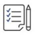

HOME > 인재채용 > 채용절차
채용절차
“ 채용절차를 안내해 드립니다. ”
채용절차
-
지원서 접수
-

직무적합성 평가
-
직무적성검사
-
종합면접
-
채용 건강검진
-
- 1. 지원서 접수
- 기본 인적사항, 학업 이수내용, 경험/자격, 에세이 작성 후 제출
※ 삼성 채용 홈페이지(http://www.samsungcareers.com)를 통해 접수
-
- 2. 직무적합성 평가
- 지원서 제출 정보를 바탕으로 직군별 직무수행역량을 평가
※ 직무적합성평가 합격자에 한해 직무적성검사 응시 가능
-
- 3. 직무적성검사
- GSAT (Global Samsung Aptitude Test)
- 대상 : 연구개발, 기술/설비, 영업마케팅, 경영지원 지원자 / - 영역 : 언어력, 수리력, 추리력, 시각적사고
-
- 4. 종합면접
- 임원면접 + 직무역량면접 + 창의성면접
-
- 5. 채용 건강검진
- 건강검진 합격자에 한해 최종 합격 및 입사 가능
-
- 지원자격
- - 학력/연령/성별에 제한없이 지원이 가능합니다. (3급은 공인기관의 어학 성적 보유必)
- 해외여행에 결격사유가 없고, 병역기피 사실이 없어야 합니다.